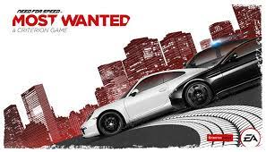
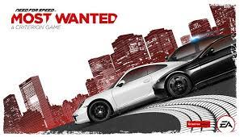
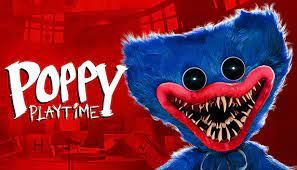
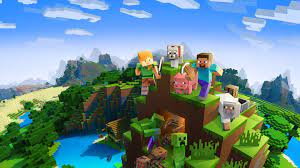
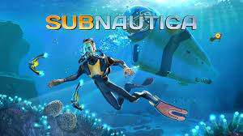
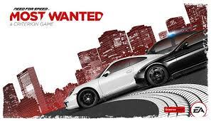

1 Гра. Poppy Playtime — епізодична відеогра у жанрі survival horror 2021 року , розроблена та видана американським інді-розробником Mob Entertainment. [a] Дія відбувається у 2005 році, гравець бере на себе роль колишнього працівника компанії Playtime Co., яка виготовляє іграшки, який повертається до своєї покинутої фабрики іграшок через 10 років після таємничого зникнення її персоналу. Гравець переміщається від першої особи та повинен розгадувати головоломки, деякі з яких вимагають гаджета під назвою GrabPack, щоб прогресувати, уникаючи різноманітних ворогів.
2 Гра. Minecraft (від англ. mine - "шахта; добувати" + craft - "ремесло; створювати") - комп'ютерна інді-гра в жанрі пісочниці , створена шведським програмістом Маркусом Перссоном і випущена його студією Mojang AB . У 2009 році Персон опублікував початкову версію гри; Наприкінці 2011 року було випущено стабільну версію для комп'ютерів Windows , Linux і macOS з поширенням через офіційний сайт. У наступні роки Minecraft була портована на мобільні пристрої під керуванням Android , iOS та Windows Phone ; на ігрові приставки PlayStation 3 , PlayStation 4 , PlayStation Vita , Xbox 360 , Xbox One , New Nintendo 3DS , Nintendo Switch та Wii U ; та інші платформи. У 2014 році корпорація Microsoft придбала права на Minecraft разом із студією Mojang AB за 2,5 мільярда доларів. У 2017 році було випущено мультиплатформну версію гри, що об'єднала різні версії для різних пристроїв [⇨] .
3 Гра. Subnautica — це пригодницька гра на виживання, розроблена та опублікована Unknown Worlds Entertainment . Гравець керує Райлі Робінсоном, єдиним, хто вижив після аварії космічного корабля на чужій океанічній планеті, яку вони можуть вільно досліджувати. Основні цілі — знайти необхідні ресурси, вижити серед місцевої флори та фауни та знайти спосіб втекти з планети.
4 Гра. Counter-Strike 2 (скорочено CS 2) — багатокористувацька гра в жанрі тактичного шутера від першої особи, розроблена компанією Valve. Є 5-ю грою в серії Counter-Strike. Valve анонсувала гру 22 березня 2023 року, оголосивши, що вона вийде влітку 2023 року. Компанія почала розсилати перші запрошення на обмежений тест для Counter-Strike 2 в ніч з 22 на 23 березня 2023 року, доступний тільки для користувачів Windows, доступ до нової версії гри отримали не всі гравці, а лише частина. За офіційною інформацією[2], компанія спиралася на кількість годин на офіційних серверах і на Trust Factor. Реліз гри відбувся 27 вересня 2023 року. Counter Strike 2 замінила CS:GO, яка була видалена зі Steam.
5 Гра. Need for Speed: Most Wanted (NFS: MW) — дев'ята відеогра серії автосимуляторів Need for Speed розроблена і видана Electronic Arts в 2005 році. Відмінною особливістю гри стало те, що після довгої перерви в серії знову з'явилися поліцейські. Тепер будь-яка гонка могла закінчитися не тільки призом, але і подальшою гонитвою з поліцейськими, яка, в свою чергу, могла закінчитися або успішним відходом, або арештом і штрафом з можливою конфіскацією машини. На відміну від двох попередніх частин, у грі знову помітна градація автомобілів від широкого вжитку до класу люкс, яка, однак, нівелюється широкими можливостями тюнінга. Це перша гра з серії NFS, де погоні з поліцейськими зросли до масштабу Голлівуду.